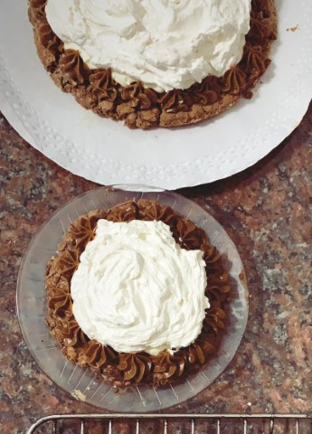

Marquise de Chocolate
The Marquise is a cake with a chocolate base, a layer of dulce de leche,
another of whipped cream, and (as it wasn’t enough) Italian meringue on
top. It’s very rich, great dessert for people with a sweet tooth who
love chocolate. I use Maru Botana’s recipe but I either do 1/4 or 3/8 of
the quantities because it’s a bomb otherwise.

Ingredients
- 150 grams of butter
- 112 grams of dark chocolate
- 3/4 cups of sugar
- 3 eggs
-
3/4 tablespoon of all-purpose flour (or cornstarch for gluten-free)
- 180 grams of dulce de leche
- 75 grams of heavy cream (optional)
For the Italian Meringue:
- 150 grams of sugar
- 75 grams of egg whites
- 150 grams of water
Procedure
-
Melt the chocolate, butter, and sugar in a water bath. I know we all
just want to use the microwave, but it’s actually not that bad, try to
enjoy it!
-
Take it out of the heat, add the eggs, and mix by hand so it’s all
well incorporated. Add the flour/cornstarch and mix well.
-
Grease and flour a 9” pan, pour the mixture, and bake in a 350°F oven
until the edges start to unstick from the pan.
- Let it cool completely and take it out of the pan.
- For the meringue, follow the Italian Meringue notes.
-
Time to put the Marquise together: top the chocolate layer with the
dulce de leche, a very fine layer of freshly whipped heavy cream (with
no sugar unless you want to die), and finish it with the meringue.